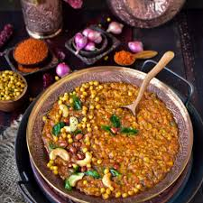

Bisi Bele Bath

Bisi Bele Bath is a flavorful and spicy South Indian rice dish made with rice, lentils, and vegetables, served with a special Bisi Bele Bath powder and topped with a dollop of ghee. It is typically served hot, making it a comfort food, especially in the cold weather.
Ingredients:
- For Rice and Lentils:
- 1 cup rice
- 1/4 cup toor dal (pigeon peas)
- 1/4 cup moong dal (yellow split lentils)
- 2 cups water
- For Vegetables:
- 1 small potato, cubed
- 1/2 cup carrots, chopped
- 1/2 cup beans, chopped
- 1/4 cup peas
- For Bisi Bele Bath Masala:
- 1 tablespoon ghee or oil
- 1/2 teaspoon cumin seeds
- 1 teaspoon coriander seeds
- 1/2 teaspoon black pepper
- 3-4 dried red chilies
- 1/4 teaspoon fenugreek seeds
- 1/4 teaspoon mustard seeds
- 1/4 teaspoon turmeric powder
- 1 tablespoon grated fresh coconut
- Other Ingredients:
- 2 tablespoons tamarind paste
- 1 tablespoon jaggery (optional)
- Salt to taste
- Fresh coriander leaves for garnish
- Ghee for serving
Instructions:
-
Prepare Rice and Lentils:
- Wash the rice and lentils thoroughly and cook them together in a pressure cooker with 2 cups of water for 3-4 whistles.
- Alternatively, cook the rice and lentils in a pot until they are soft and well-cooked.
-
Cook Vegetables:
- In a separate pot, cook the vegetables (potato, carrots, beans, and peas) until they are tender.
- You can cook them in a pressure cooker or by boiling them in water.
-
Prepare Bisi Bele Bath Masala:
- In a pan, heat 1 tablespoon of ghee or oil. Add cumin seeds, coriander seeds, fenugreek seeds, mustard seeds, and dried red chilies. Sauté until the spices are fragrant.
- Add black pepper, turmeric powder, and grated coconut. Sauté for a minute, then remove from heat.
- Once cooled, grind this mixture into a fine powder using a blender or spice grinder.
-
Combine Rice, Lentils, Vegetables, and Masala:
- In a large mixing bowl, combine the cooked rice and lentils with the cooked vegetables.
- Add the prepared Bisi Bele Bath masala, tamarind paste, jaggery (if using), and salt. Mix everything together well.
-
Final Cooking:
- Transfer the mixture into a large pot and add water as needed to achieve a smooth, porridge-like consistency.
- Cook the mixture on low heat for 10-15 minutes, stirring occasionally to prevent it from sticking to the bottom.
-
Serving:
- Serve hot Bisi Bele Bath with a dollop of ghee and garnish with fresh coriander leaves.
- It pairs well with raita or papad.
Serving:
Enjoy the delicious and comforting Bisi Bele Bath as a one-pot meal that combines the richness of rice, lentils, vegetables, and aromatic spices. It is a perfect dish for lunch or dinner, especially during colder months.